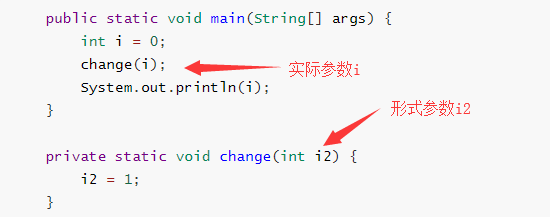
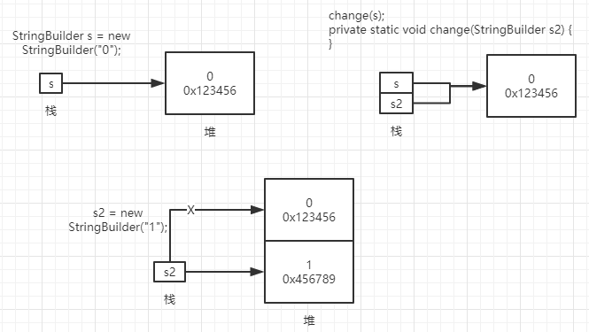

这是一道我们公司的面试题，从招第二个Java以来就一直存在了。但是面试了这么长的时间还没有一个人可以全部答对，让我们一度以为是这题出的不对。首先请看面试题。
以下运算的输出分别是多少：
public static void main(String[] args) {
int i = 0;
change(i);
System.out.println(i);
}
private static void change(int i2) {
i2 = 1;
} public static void main(String[] args) {
Integer i = 0;
change(i);
System.out.println(i);
}
private static void change(Integer i2) {
i2 = 1;
} public static void main(String[] args) {
StringBuilder s = new StringBuilder("0");
change(s);
System.out.println(s);
}
private static void change(StringBuilder s2) {
s2 = new StringBuilder("1");
}看完题之后你是不是已经有了自己的答案，记下你的答案，不介意的话评论区留言看看有没有人能全对。
首先需要明确几个概念。
实参与形参：
如下图所示，形式参数是在定义函数名和函数体的时候使用的参数，目的是接收调用该函数时传入的参数。
实际参数是在调用有参函数时传入的参数。

堆和栈：
栈
存放基本类型的变量数据和对象的引用，但对象本身不存放在栈中，而是存放在堆（new 出来的对象）或者常量池中（字符串常量对象存放在常量池中。）
堆
存放所有new出来的对象。
常量池
存放字符串常量和基本类型常量。
值传递和引用传递：
需要明确一点Java中只有值传递。
值传递和引用传递，不是传递的内容是值是值传递，传递的是引用就是引用传递；也不是传递的参数是普通类型就是值传递，是对象就是引用传递。
拿第三个题目进行分析。先看看在程序运行时堆栈中都发生了些什么。

如上图所示。
s，并且在堆中开辟空间存放对象并且值为0；s2，并且指向第一步中对象地址；s2指向新的地址。从上图中可以看出，s的指向并没有发生变化，因此第三题得出的答案为0。
继续看第二题，第二题与第三题的区别在于，Integer的值会放在常量池中，因此将上图中的堆改为常量池其他的完全一样，所以第二题的答案也是0。
对于第一题，由于涉及到的形参和实参都是基本类型，因此i和i2完全是在栈中操作，此时打印出的结果依旧是0。
转评赞就是最大的鼓励